#1

Mongolian Beef
difficulty:
Ingredients and Equipment
For 4 Servings:
- 1 cup uncooked rice
- 1½ pounds beef flank steak
- ½ cup cornstarch
- 3 tablespoons vegetable oil, divided
- 3 cloves garlic, minced
- 2 teaspoons grated fresh ginger
- ½ cup water
- 1½ cup soy sauce
- ½ cup packed dark brown sugar
- Pinch red pepper flakes
- 2 green onions, diagonally sliced into 1-inch pieces
Recipe Instructions:
- Cook rice according to package directions.
- Meanwhile, cut flank steak in half lengthwise, then cut crosswise (against the grain) into ½-inch slices. Combine beef and cornstarch in medium bowl; toss to coat.
- Heat 1 tablespoon oil in large skillet or wok over high heat. Add half of beef in single layer (do not crowd); cook 1 to 2 minutes per side or until browned. Remove to clean bowl. Repeat with remaining beef and 1 tablespoon oil.
- Heat remaining 1 tablespoon oil in same skillet over medium heat. Add garlic and ginger; cook and stir 30 seconds. Add water, soy sauce, brown sugar and red pepper flakes; bring to a boil, stirring until well blended. Cook 8 minutes or until sauce is slightly thickened, stirring occasionally.
- Return beef to skillet; cook 2 to 3 minutes or until sauce thickens and beef is heated through. Stir in green onions. Serve over rice.
#2

Balsamic-Glazed Sirloin and Spinach
difficulty:
Ingredients and Equipment
MAKES 4 servings
- 5 tablespoons olive oil, divided
- 2 Vidalia or other sweet onions, thinly sliced
- 3 tablespoons balsamic vinegar, divided
- 1½ teaspoons salt, divided
- 1 teaspoon coarsely ground black pepper
- 1 pound top sirloin steak (1 inch thick)
- 1 package (about 10 ounces) fresh spinach, coarsely chopped
- Heat 2 tablespoons oil in large skillet over medium-high heat. Add onions; cook 10 minutes or until softened, stirring occasionally. Sprinkle with 1 tablespoon vinegar and ½ teaspoon salt; cook 10 minutes or until beginning to brown, stirring occasionally.
- Meanwhile, press pepper onto both sides of steak. Rub steak with ½ teaspoon vinegar; sprinkle with ½ teaspoon salt. Heat 1 tablespoon oil in another large skillet over medium-high heat. Add steak; cook 5 minutes. Turn and cook 3 to 5 minutes for medium rare (135°F) or to desired doneness. Transfer steak to cutting board; tent with foil. Let stand 5 minutes before slicing.
- Add remaining 2 tablespoons oil to skillet. Add spinach; cover and cook 2 minutes. Stir spinach; cook 1 minute if necessary to wilt all of spinach. Add remaining vinegar and ½ teaspoon salt; cook and stir 1 minute.
- Cut steak into thin slices; serve over spinach and onions.
#3

Pork Chops with Vinegar Peppers
difficulty:
Ingredients and Equipment
For 4 Servings
- 4 pork chops (about 1 inch thick)
- ½ teaspoon salt
- ¼ teaspoon black pepper
- 2 tablespoons olive oil
- 1½ cups seeded hot cherry peppers, cut into ½-inch slices
- 2 cloves garlic, minced
- ¼ cup liquid from cherry pepper jar
- ¼ cup water
- 1 sprig fresh rosemary
- Season both sides of pork chops with salt and black pepper
- Heat oil in large skillet over medium-high heat. Add pork chops; cook about 5 minutes per side or until browned. Remove to plate; keep warm
- Add cherry peppers and garlic to skillet; cook and stir 2 minutes over medium heat, scraping up browned bits from bottom of skillet. Stir in cherry pepper liquid, water and rosemary.
- Return pork chops to skillet; cover and cook about 6 minutes or until pork is barely pink in center (145°F)
#4

Meat Loaf Patties with Skillet Rice
difficulty:
Ingredients and Equipment
For 4 Servings
- 12 ounces ground beef
- 1 tablespoon vegetable oil
- 4 ounces bulk pork or turkey sausage
- 2 tablespoons ketchup
- ½ cup picante sauce, divided
- 1 teaspoon Worcestershire sauce
- 2 eggs
- 1 cup uncooked instant brown rice
- ½ cup quick or old-fashioned oats
- ½ cup water
- Combine beef, sausage, ½ cup picante sauce, eggs and oats in medium bowl. Shape into four ½-inch-thick patties. Heat oil in large nonstick skillet over medium heat. Add patties; cook 5 minutes.
- Meanwhile, combine 2 tablespoons picante sauce, ketchup and Worcestershire sauce in small bowl. Turn patties. Spoon 1 tablespoon picante mixture on each patty. Reduce heat to medium-low; cover and cook 10 to 12 minutes or until cooked through (160°F).
- Meanwhile, cook rice according to package directions.
- Remove patties to plate. Add water, remaining picante sauce and rice to skillet; stir to scrape up browned bits. Place patties on rice mixture; simmer 3 minutes.
#5

Taco-Topped Potatoes
difficulty:
Ingredients and Equipment
For 4 Servings:
- 4 russet potatoes (8 to 12 ounces each), scrubbed and pierced with fork
- 8 ounces ground beef
- (14-ounce) package taco seasoning mix
- ½ cup water
- 1 cup diced tomatoes
- ¼ teaspoon salt
- 2 cups shredded lettuce
- ½ cup (2 ounces) shredded Cheddar cheese
- ½ cup chopped green onions
- 1½ cup sour cream
- Microwave potatoes on HIGH 6 to 7 minutes or until fork-tender.
- Meanwhile, brown beef in large skillet over medium-high heat 6 to 8 minutes, stirring to break up meat. Drain fat. Stir in seasoning mix and water. Reduce heat to low; simmer 5 minutes, stirring occasionally.
- Combine tomatoes and salt in medium bowl.
- Split potatoes almost in half and fluff with fork. Fill with beef mixture, tomatoes, lettuce, cheese and green onions. Serve with sour cream
#6
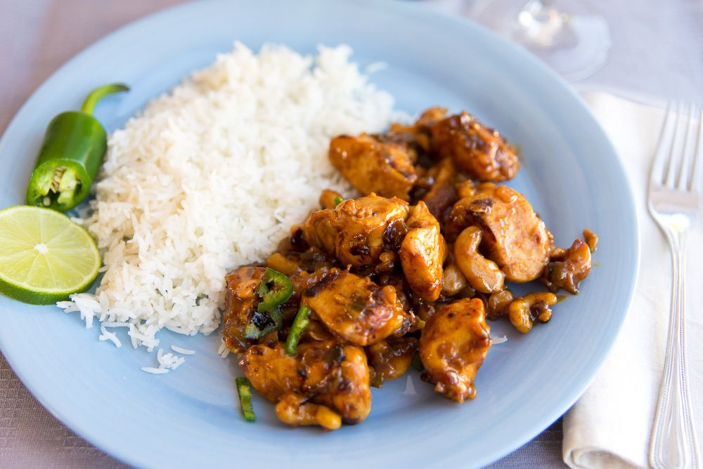
Chicken Balinese
difficulty:
Ingredients and Equipment
For 4 Servings:
- 1 cup uncooked rice
- 8 boneless skinless chicken thighs
- ½ teaspoon salt
- ¼ teaspoon black pepper
- 1 small onion, chopped
- 8 roasted cashews
- 2 cloves garlic
- 1 tablespoon chopped fresh ginger
- Cook rice according to package directions.
- Meanwhile, cut chicken crosswise into 4-inch-wide strips. Place on large plate; sprinkle with salt and pepper.
- Combine onion, cashews, garlic, ginger and red pepper in food processor or blender; process until smooth paste forms. Set aside.
- Heat wok over medium-high heat 1 minute or until hot. Drizzle oil into wok and heat 30 seconds. Add chicken; stir-fry about 4 minutes or until chicken is cooked through. Reduce heat to medium.
- Add onion mixture to wok; stir-fry 2 minutes. Add ketchup, brown sugar and soy sauce; cook and stir until sugar dissolves and chicken is coated. Serve chicken with rice and lime wedges, if desired.
#7
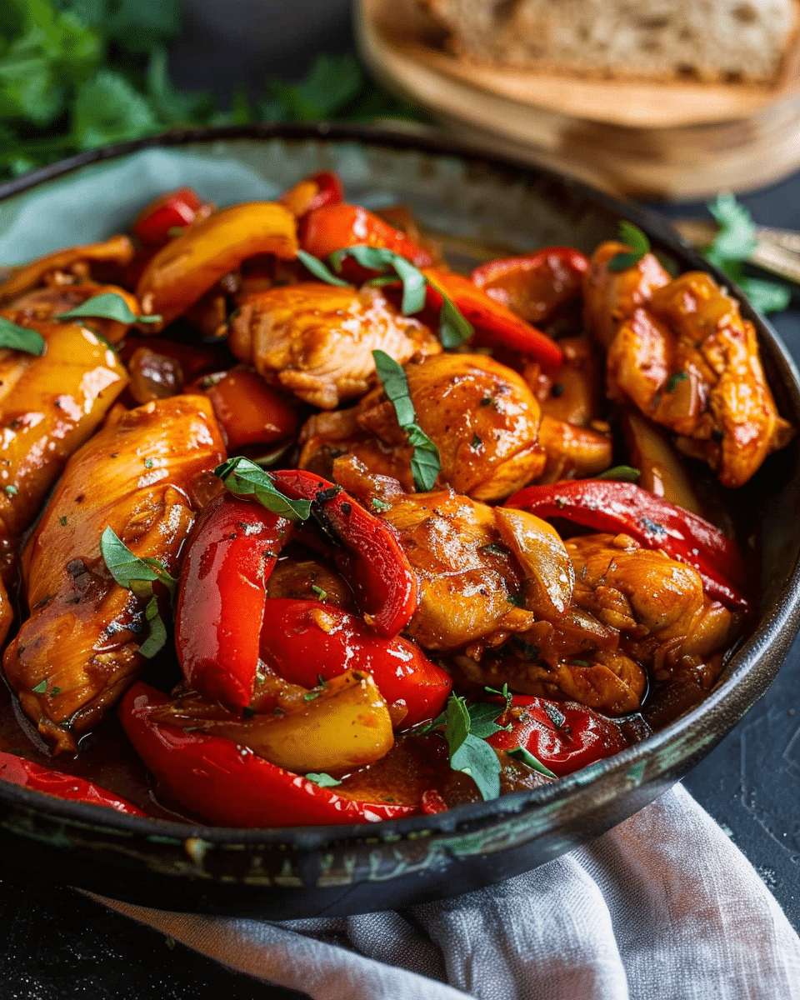
Easy Chicken and Peppers
difficulty:
Ingredients and Equipment
For 4 Servings:
- 1 tablespoon Mexican seasoning
- 4 boneless skinless chicken breasts (about 6 ounces each)
- 1 tablespoon vegetable oil
- 1 red onion, sliced
- 1 red bell pepper, cut into thin strips
- 1 yellow or green bell pepper, cut into thin strips
- ½ cup chunky salsa or chipotle salsa
- 2 tablespoons lime juice Lime wedges (optional)
*If Mexican seasoning is not available, substitute 1 teaspoon chili powder, ½ teaspoon ground cumin, ½ teaspoon salt and ½ teaspoon ground red pepper.
- Sprinkle Mexican seasoning over both sides of chicken.
- Heat oil in large nonstick skillet over medium heat. Add onion; cook and stir 3 minutes. Add bell peppers; cook and stir 3 minutes. Stir in salsa and lime juice.
- Push vegetables to edge of skillet. Add chicken; cook 5 minutes. Turn and cook 4 minutes or until chicken is no longer pink in center and vegetables are tender.
- Serve chicken over vegetable mixture. Garnish with lime wedges.
#8
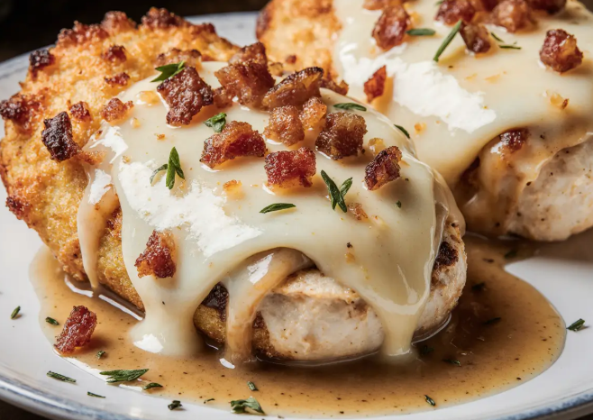
Bacon and Cheese Stuffed Chicken
difficulty:
Ingredients and Equipment
For 4 Servings:
- 4 boneless skinless chicken breasts (about 6 ounces each)
- ½cup (2 ounces) shredded Swiss cheese
- 2 tablespoons real bacon bits or chopped crisp-cooked bacon
- 2 teaspoons paprika, divided
- 1½ teaspoons salt, divided
- teaspoon red pepper flakes, divided
- 2 teaspoons vegetable oil
- 1½ cups chicken broth
- ⅔ cup uncooked quick-cooking brown rice
- ½ cup sliced green onions
- Cut slit in thickest part of each chicken breast to form a pocket. Place chicken between sheets of waxed paper or plastic wrap; pound to even 15-inch thickness.
- Combine cheese and bacon bits in small bowl; stuff into pockets, pressing edges of chicken closed over filling. Sprinkle 1 teaspoon paprika, 1 teaspoon salt and ½ teaspoon red pepper flakes over chicken.
- Heat oil in large nonstick skillet over medium heat. Add chicken; cook 5 minutes per side or until chicken is no longer pink in center.
- Meanwhile, combine broth, rice, remaining 1 teaspoon paprika, ½ teaspoon salt and ½ teaspoon red pepper flakes in medium saucepan. Bring to a boil over high heat. Reduce heat to low; cover and simmer 10 minutes or until liquid is absorbed. Stir in green onions; transfer to four serving plates and top with chicken.
#9
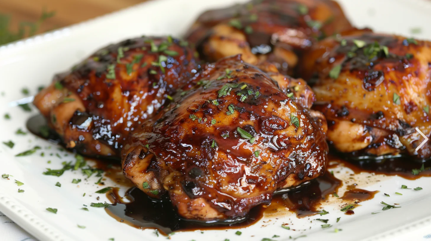
Sticky Balsamic Chicken
difficulty:
Ingredients and Equipment
For 4 Servings:
- 2 tablespoons olive oil, divided
- ½ cup chopped shallots
- 1 cup cola beverage
- cup balsamic vinegar
- 1½ pounds boneless skinless chicken cutlets
- 2 cloves garlic, minced
- 2 tablespoons chopped fresh basil
- ½ teaspoon salt
- ½ teaspoon black pepper
- Spray grill grate with nonstick cooking spray. Prepare grill for direct cooking over medium-high heat.
- Heat 1 tablespoon oil in large nonstick skillet over medium heat. Add shallots; cook and stir 3 minutes or until tender. Reduce heat to low. Add cola and vinegar; simmer 10 minutes or until reduced to ½ cup. Reserve half of sauce in small bowl for serving.
- Place chicken on cutting board. Rub with garlic, basil, salt and pepper; drizzle with remaining 1 tablespoon oil.
- Grill chicken 2 to 3 minutes per side or until chicken is no longer pink in center, basting with remaining balsamic mixture. Serve chicken with reserved balsamic mixture.
#10
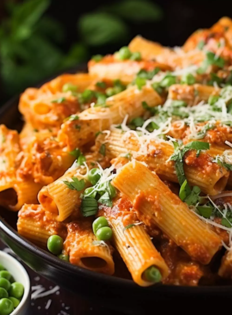
Spicy Chicken Rigatoni
difficulty:
Ingredients and Equipment
For 4 Servings:
- 1 package (16 ounces) uncooked mezzo rigatoni or penne pasta
- ½ cup frozen peas
- 2 tablespoons olive oil
- 2 cloves garlic, minced
- ½ teaspoon red pepper flakes
- ½ teaspoon black pepper
- 8 ounces boneless skinless chicken breasts, cut into thin strips
- 1 cup marinara sauce
- ¼ cup Alfredo sauce
- Grated Parmesan cheese (optional)
- Cook pasta in large saucepan of salted boiling water according to package directions for al dente, adding peas during last minute of cooking. Drain and return to saucepan; keep warm.
- Meanwhile, heat oil in large saucepan over medium-high heat. Add garlic, red pepper flakes and black pepper; cook and stir 1 minute. Add chicken; cook and stir 4 minutes or until browned.
- Add marinara sauce and Alfredo sauce; stir until blended. Reduce heat to medium-low; cook 10 minutes, stirring occasionally or until chicken is cooked through. Add pasta and peas; stir gently to coat. Cook 2 minutes or until heated through. Sprinkle with cheese, if desired.
#11
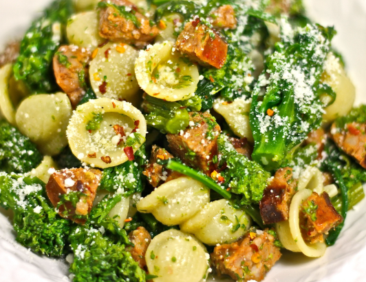
Orecchiette with Sausage and Broccoli Rabe
difficulty:
Ingredients and Equipment
MAKES 4 TO 6 SERVINGS:
- 1 tablespoon olive oil
- 12 ounces bulk mild Italian sausage
- 3 cloves garlic, minced
- ¼ teaspoon red pepper flakes
- 4 cups chicken broth, divided
- ½ teaspoon salt
- 1 package (16 ounces) uncooked orecchiette pasta
- 1 bunch broccoli rabe (about 1 pound), tough stems removed, cut into 2-inch-long pieces
- 3½ cup grated Parmesan cheese, divided
- Juice of 1 lemon
- Heat oil in large saucepan or Dutch oven over medium-high heat. Add sausage; cook about 8 minutes or until browned, stirring to break up meat. Add garlic and red pepper flakes; cook and stir 1 minute. Add 2 tablespoons broth; cook 1 minute, stirring to scrape up browned bits from bottom of saucepan.
- Stir in remaining broth and salt; bring to a boil. Add pasta, stirring to separate pieces as much as possible. Reduce heat to medium; cover and cook 10 minutes, stirring occasionally to prevent pasta from sticking.
- Add broccoli rabe; stir to wilt and blend with pasta. Cover and cook 4 minutes or until pasta is tender and liquid is absorbed, stirring occasionally.
- Stir in ½ cup cheese and lemon juice; mix well. Top with remaining ¼ cup cheese.
#12
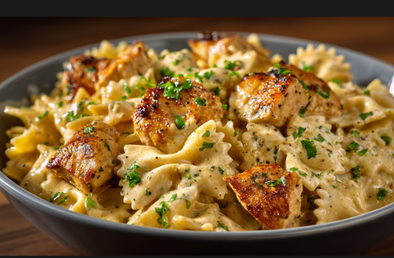
Chicken Bowtie Party
difficulty:
Ingredients and Equipment
MAKES 4 SERVINGS:
- 1 package (12 to 16 ounces) uncooked bowtie pasta (farfalle)
- 6 slices bacon, chopped
- 2 ounces boneless skinless chicken breasts, cut into 2x½-inch strips*
- ½ cup chopped red onion
- 1 teaspoon minced garlic
- 2 plum tomatoes, diced (about ½ cup)
- 1 cup whipping cream
- ¼ cup shredded Asiago cheese, plus additional for garnish
- 1 jar (15 ounces) Alfredo sauce
- Finely chopped fresh parsley (optional)
- Cook pasta in large saucepan of salted boiling water according to package directions for al dente. Drain and return to saucepan; keep warm.
- Meanwhile, cook bacon in large skillet over medium-high heat until cooked through. (Bacon should still be chewy, not quite crisp.) Remove to paper towel-lined plate. Drain all but 1 tablespoon drippings from skillet.
- Add chicken to skillet; cook 4 minutes or until chicken begins to brown, turning occasionally. Add onion and garlic; cook and stir 2 minutes. Add tomatoes and bacon; cook and stir 1 minute. Stir in cream and ¼ cup cheese; cook 4 minutes or until liquid is slightly reduced.
- Add chicken mixture and Alfredo sauce to pasta in saucepan; stir gently to coat. Cook over medium heat until heated through, stirring occasionally. Garnish with parsley and additional cheese.
#13
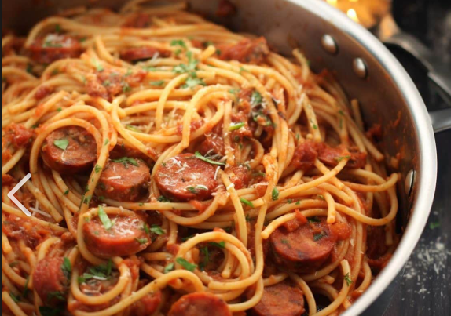
Meaty Sausage Spaghetti
difficulty:
Ingredients and Equipment
MAKES 6 TO 8 SERVINGS:
- 1 tablespoon olive oil
- 1 cup chopped onion
- 2 cloves garlic, minced
- 1 package (20 ounces)
- bulk Italian sausage
- 1 cup chopped yellow, red and/or green bell peppers
- 1 can (about 14 ounces) crushed tomatoes
- 1 can (about 14 ounces) diced tomatoes
- 2.5 teaspoons salt
- 2 teaspoons dried basil
- 1 teaspoon dried oregano
- ½ teaspoon black pepper
- 1 package (16 ounces) uncooked spaghetti, broken in half
- 2 to 3 cups water, divided Grated Parmesan cheese
- Heat oil in large saucepan or Dutch oven over medium-high heat. Add onion and garlic; cook and stir 3 minutes or until softened. Add sausage; cook about 8 minutes or until browned, stirring to break up meat. Drain fat. Add bell peppers; cook and stir 2 minutes. Add crushed tomatoes, diced tomatoes, salt, basil, oregano and pepper; mix well.
- Add pasta and 2½ cups water to saucepan; stir pasta gently to allow some liquid to get between strands. Bring to a boil. Reduce heat to medium; cover and cook 15 minutes, stirring occasionally to separate pasta.
- Uncover; add additional water if pasta seems dry. Test pasta for doneness; continue to cook 2 to 3 minutes or until pasta reaches desired doneness, stirring frequently. Adjust seasonings. Sprinkle with cheese.
#14
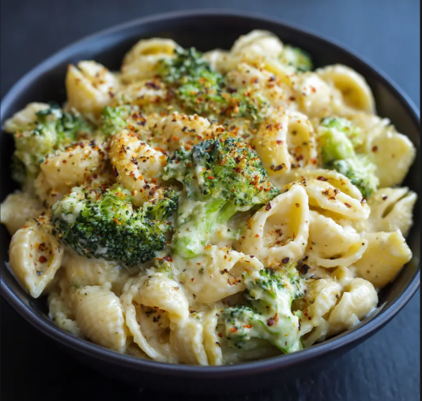
Creamy Macaroni and Broccoli
difficulty:
Ingredients and Equipment
MAKES 4 SERVINGS:
- 12 ounces uncooked elbow macaroni
- 2 cups small broccoli florets
- 6 tablespoons (4 stick) butter
- 6 tablespoons all-purpose flour
- 1 teaspoon salt
- 2 cups milk
- ¼ cup plus 2 tablespoons grated Romano cheese
- Dash ground nutmeg
- Shaved Romano cheese (optional)
- Cook macaroni in large saucepan of salted boiling water according to package directions for al dente, adding broccoli during last 4 minutes of cooking. Drain and return to saucepan; keep warm.
- Melt butter in medium saucepan over medium heat. Whisk in flour and salt; cook and stir 2 minutes. Gradually add milk, whisking constantly until well blended and smooth. Cook and stir 3 to 4 minutes or until slightly thickened. Remove from heat. Stir in grated cheese and nutmeg.
- Add macaroni and broccoli to sauce; mix well. Sprinkle with shaved cheese, if desired.
#15
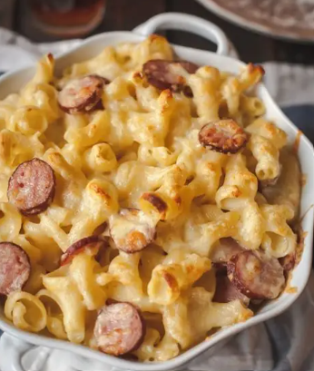
Smoked Sausage Mac and Cheese
difficulty:
Ingredients and Equipment
MAKES 4 TO 6 SERVINGS:
- 1 tablespoon olive oil
- 1 medium onion, finely chopped
- 1 package (about 12 ounces) smoked turkey sausage, cut into 4-inch slices
- 1 package (16 ounces) uncooked macaroni pasta
- 4 cups water
- 2 teaspoons salt, divided
- 4 tablespoons butter, divided
- 1 clove garlic, minced
- 1 cup panko bread crumbs
- 4 cups (16 ounces) shredded Cheddar cheese
- 1 cup (4 ounces) shredded Monterey Jack cheese
- 1 can (12 ounces) evaporated milk
- Black pepper
- Heat oil in large saucepan or Dutch oven over medium-high heat. Add onion; cook 5 to 7 minutes or until golden brown. Add sausage; cook and stir 5 minutes or until lightly browned, stirring occasionally. Add pasta, water and 1½ teaspoons salt; cover and cook 13 to 15 minutes or until pasta is al dente, stirring occasionally.
- Meanwhile, melt 2 tablespoons butter in medium skillet over medium-high heat. Add garlic; cook and stir 30 seconds. Add panko and remaining ½ teaspoon salt; cook and stir 2 minutes or until panko is golden brown. Remove from heat.
- Uncover pasta and reduce heat to medium-low. Stir in cheeses, evaporated milk and remaining 2 tablespoons butter; cook and stir 1 to 2 minutes or until cheese is melted and pasta is creamy. Season with pepper; sprinkle with panko.
#16
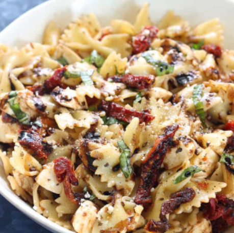
Bowtie Pasta with Chicken and Bacon
difficulty:
Ingredients and Equipment
MAKES 4 SERVINGS:
- 3 cups uncooked bowtie pasta (farfalle)
- 4 slices bacon, chopped
- 1 pound boneless skinless chicken breasts, cut into 1-inch pieces
- 1 can (about 14 ounces) Italian-style diced tomatoes
- ½ teaspoon salt
- ½ teaspoon black pepper
- ½ cup chicken broth or water
- 4 ounces cream cheese, cubed
- 4 tablespoons grated Parmesan cheese, divided
- Cook pasta in large saucepan of salted boiling water according to package directions for al dente. Drain and return to saucepan; keep warm.
- Meanwhile, cook bacon in large skillet over medium-high heat until almost crisp. Remove to paper towel-lined plate. Drain all but 1 tablespoon drippings from skillet.
- Add chicken to skillet; cook over medium heat about 6 minutes or until cooked through, stirring occasionally. Add tomatoes, salt and pepper; cook and stir 1 minute. Add broth, cream cheese and 2 tablespoons Parmesan cheese; cook and stir about 3 minutes or until cream cheese is melted.
- Add chicken mixture to pasta; toss gently to coat. Sprinkle with remaining 2 tablespoons Parmesan cheese.
#17
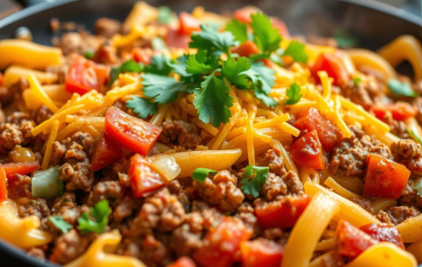
Easy Taco Pasta Skillet
difficulty:
Ingredients and Equipment
MAKES 6 SERVINGS:
- 1 pound ground beef
- 1 onion, chopped
- 1 package (about 1 ounce) taco seasoning mix
- 2 cups water
- 1 jar (16 ounces) medium salsa
- 1 can (4 ounces) diced mild green chiles
- ¼ teaspoon salt
- 8 ounces uncooked rotini pasta
- Shredded Cheddar or Mexican blend cheese (optional)
- Cook beef and onion in large skillet over medium-high heat 6 to 8 minutes or until beef is browned, stirring to break up meat. Drain fat. Add seasoning mix; cook and stir 1 minute.
- Stir in water, salsa, chiles and salt; mix well. Stir in pasta; bring to a simmer. Reduce heat to low; cover and cook about 12 minutes or until pasta is tender. Sprinkle with cheese, if desired.
#18
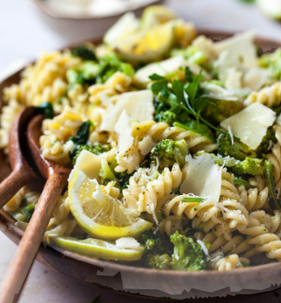
Lemon Broccoli Pasta
difficulty:
Ingredients and Equipment
MAKES 4 TO 6 SERVINGS:
- 2 tablespoons butter
- ½ teaspoon black pepper
- ½ cup sliced green onions
- 8 ounces uncooked angel hair pasta
- 2 cloves garlic, minced
- 2 cups fresh or frozen broccoli florets
- 4 cups vegetable broth
- ½ cup sour cream
- 2 teaspoons grated lemon peel
- ½ cup grated Parmesan cheese
- ½ teaspoon salt
- Melt butter in large saucepan over medium heat. Add green onions and garlic; cook and stir 3 minutes or until green onions are tender.
- Stir in broth, lemon peel, salt and pepper; bring to a boil over high heat. Stir in pasta and broccoli; return to a boil. Reduce heat to low; cook about 6 minutes or until pasta is al dente, stirring frequently.
- Remove from heat; stir in sour cream until well blended. Let stand 5 minutes; top with cheese.
#19
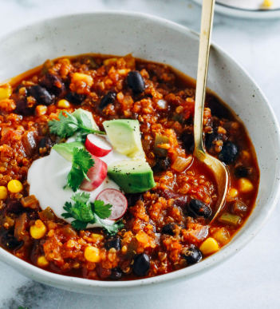
Quinoa Chili
difficulty:
Ingredients and Equipment
MAKES 4 SERVINGS:
- 2 tablespoons vegetable oil
- 1 can (about 15 ounces) kidney beans, rinsed and drained
- 1 onion, chopped
- 1 red bell pepper, chopped
- 1 large carrot, sliced
- 1 cup water
- 1 stalk celery, diced
- 1 cup fresh or thawed frozen corn
- 1 jalapeño pepper, finely chopped
- 1 cup cooked quinoa*
- 1 tablespoon minced garlic
- 1 tablespoon chili powder
- 2 teaspoons ground cumin
- Optional toppings: diced avocado, shredded Cheddar cheese and sliced green onions
- 1 teaspoon salt
- 1 can (28 ounces) crushed tomatoes
- Heat oil in large saucepan over medium-high heat. Add onion, bell pepper, carrot and celery; cook 5 minutes or until vegetables are softened, stirring occasionally. Add jalapeño, garlic, chili powder, cumin and salt; cook 1 minute or until fragrant.
- Stir in tomatoes, beans, water, corn and quinoa; bring to a boil. Reduce heat to medium; cover and simmer 20 minutes, stirring occasionally. Serve with desired toppings.
#20
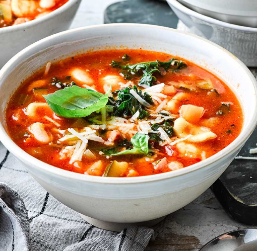
Minestrone Soup
difficulty:
Ingredients and Equipment
MAKES 4 TO 8 SERVINGS:
- 1 tablespoon olive oil
- ½ cup chopped onion
- 1 stalk celery, diced
- 1 carrot, diced
- 2 cloves garlic, minced
- 4 cups vegetable broth or water
- 1 bay leaf
- ½ teaspoon salt
- ½ teaspoon dried basil
- ½ teaspoon dried oregano
- ½ teaspoon dried thyme
- ¼ teaspoon sugar
- Ground black pepper
- 1 can (about 15 ounces) dark red kidney beans, rinsed and drained
- 1 can (about 15 ounces) navy beans or cannellini beans, rinsed and drained
- 1 can (about 14 ounces) diced tomatoes
- 1 cup diced zucchini (about 1 small)
- 1 cup uncooked small shell pasta
- ½ cup fresh or frozen cut green beans
- ¼ cup dry red wine
- 1 cup packed chopped fresh spinach
- Grated Parmesan cheese (optional)
- Heat oil in large saucepan or Dutch oven over medium-high heat. Add onion, celery, carrot and garlic; cook and stir 5 to 7 minutes or until vegetables are tender. Add broth, bay leaf, salt, basil, oregano, thyme, sugar and pepper; bring to a boil.
- Stir in kidney beans, navy beans, tomatoes, zucchini, pasta, green beans and wine; cook 10 minutes, stirring occasionally.
- Add spinach; cook 2 minutes or until pasta and zucchini are tender. Remove and discard bay leaf. Serve with cheese, if desired.